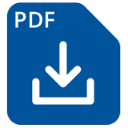

Hello everyone and welcome. It's me, Hebe.
The PDFs of my revision notes are at the bottom of the page but I thought some of you might like to know how I prepared for sitting the GAMSAT in March 2017.
I began studying for the GAMSAT in August 2016. Obviously, the first thing I looked up was the price of text books/prep courses. These made me shout "FUCK NO" pretty loudly so I decided to go it alone.
I started by finding a list of all the suggested topics for the exam off of a website advertising GAMSAT prep courses.
These were the suggested topics:
BIOLOGY- The Eukaryotic Cell, Plasma Membrane, The Cell's Interior, DNA, The Cell Cycle, Protein Synthesis, Viruses, Prokaryotes vs. Eukaryotes, Bioenergetics, The Neuron, The Nervous System, The Endocrine System, The Circulatory System, Blood Composition, Lymphatic and Immune Systems, The Digestive System, The Excretory System, Gametogenesis (Meiosis), Genetics.
ORGANIC CHEMISTRY - Stereochemistry, IUPAC Nomenclature, Principles of Reaction Mechanisms, The Carbonyl Group, Acetals/Ketals, Substitution, Carboxylic Acids, The Tetrahedryl Intermediate, Amides, Amino Acids, Protein Structure, Elimination, Alkenes, Free Radicals, Redox Reactions, Aromatic Rings, Spectroscopy, Nuclear Magnetic Resonance, Elimination vs. Substitution
GENERAL CHEMISTRY - The Atom, The Periodic Table, Chemical Bonds, Hydrogen Bonds, Ionic and Covalent Bonds, Lewis Dot Structures, Multiple Bonds, Resonance, Molecular Polarity, Hybridization, Hybrid Orbitals, Gases, Avogadro's Law, Equation of State, Graham's Law, Liquids, Maxwell's Distribution Plot, Boiling, Melting Points, Le Chatelier's Principle, Solutions, Phase Diagrams, Raoult's Law, Boiling, Freezing Point Changes, Acids and Bases, Titrations, Oxidation Numbers, Solubility Product, Thermochemistry, Calorimetry, Thermodynamics, Hess's Law, Rate Law, Energy Diagrams, Electrolysis, Electrochemical Cell
PHYSICS - The Atom, Nuclear Reactions, Radioactive Decay and Half-Life, Electricity vs. Gravity, Electric Circuits, Kirchoff's Laws, Characteristics of Waves, Diffraction, Optics, Sound, Doppler Effect, Electromagnetism, Electromagnetic Spectrum, Reflection, Refraction, Thin Lens, Snell's Law, The Critical Angle, Force and Motion, Weight and Units, Friction, Applying Newton's Laws, Trigonometry, Projectile Motion, Work, Circular Motion, Work-Energy Theorem, Energy and Entropy, Momentum, Law of Torques, Fluids, Fluids in Motion, Archimedes' Principle
Using Khan Academy, which I found to be an excellent resource, I produced a set of revision notes on every topic above. Where there seemed to be no video covering the subject, I looked elsewhere. http://www.masterorganicchemistry.com/ was great for diagrams especially.
In October, disaster struck. My computer hard drive melted and I had not backed up any of my revision notes, which I had completely only days earlier. It would have been very easy for me to have a total meltdown, similar to my laptop, but I approached starting from scratch as a revision exercise.
Having researched the GAMSAT more, I decided to not produce notes covering Biology as the majority of Biology questions in the past/specimen papers seemed to relate to data provided in the questions. I reproduced all of the Chemistry and Physics notes and once these were completed in early January, I set about making a handwritten, condensed set of notes which I finished at the beginning of February.
I spent the first three weeks of February working my way through section 1 and section 3 of all the question papers provided by ACER. Not once did I time myself. These showed me the areas of S3 that I needed to focus on more and I did this in the last week of February.
With Chemistry and Physics, I found it really important to understand the fundamental principles rather than facts. If you have a deep understanding of atoms, you can use it to determine reaction mechanisms. It is absolutely essential to complete understand atoms, periodic table trends, stereochemistry and bonding. A lot of Chemistry is just common sense too such as Le Chatelier's Principle and Thermodynamics. Some areas I used mnemonics such as REDCAT/ANOX and OILRIG.
The first two weeks of March, I dedicated to S2.
To prepare for S2, I did several things. I read vast quantities of essays and opinion pieces online.
The sources for these were mainly: http://www.acgrayling.com/, http://www.skeptic.ca/grayling_essays.htm, The Guardian.
I love Louis Theroux so I watched some of his documentaries in my designated relaxing time. I read about how to plan essays and about the GAMSAT essay criteria. I found random quotes that could be used in essays about a variety of topics. I wrote A LOT of essays to time.
There is no time to be overconfident or arrogant. There were a lot of words and ideas that I thought I understood but didn't really and it was time to look them up.
I read essays written by other candidates, and critiques of these essays.
The sources I used were:
• http://www.gamsatsampleessays.co.uk/
• http://revisegamsat.com/topics/essay-questions.1.html
• https://www.acegamsat.com/gamsat-essay-topics/
• http://www.doceatdoc.com/a-hackers-guide-to-the-gamsat-essay-question/
• https://www.gamsat-prep.com/forum/viewtopic.php?t=1535
• http://gamsatpreparation.blogspot.co.uk/search/label/section2
Click here to download my revision notes.
Please feel free to make a donation below. Thank you!